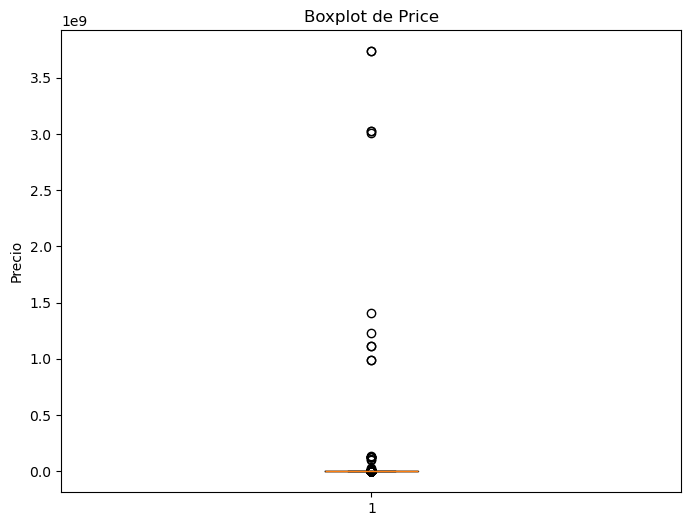
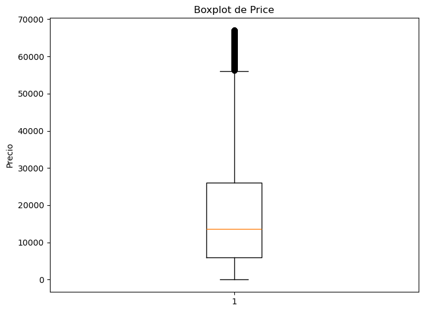
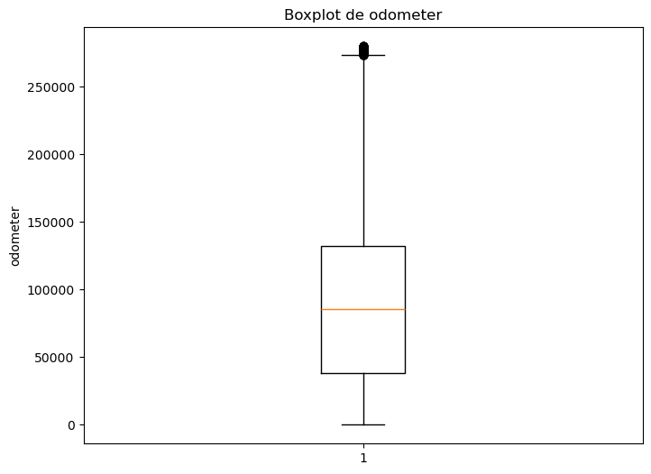
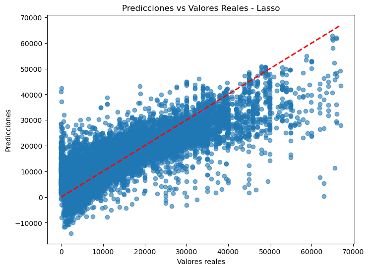
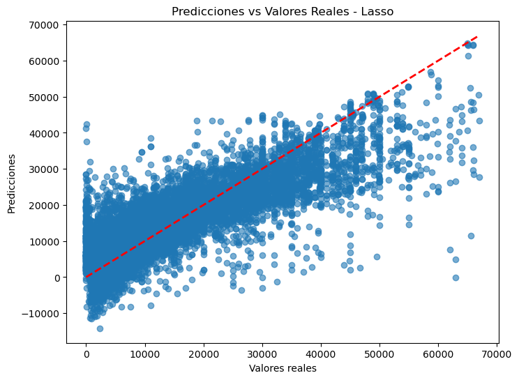
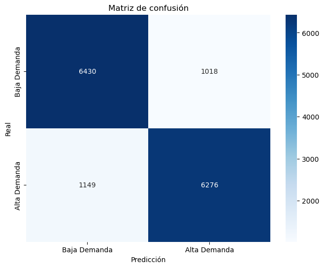
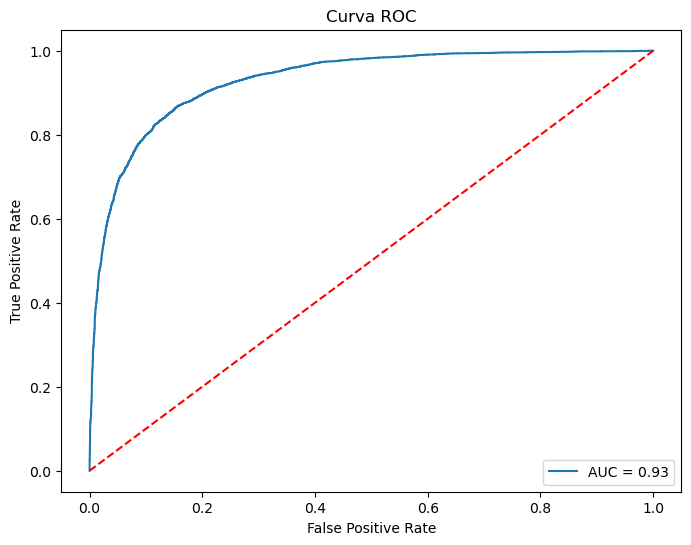

Miniproyecto: Ridge & Lasso#
Importación de librerías#
Se importan todas las dependencias necesarias para el proyecto: manejo de datos, visualización, pruebas estadísticas, descarga del dataset y todas las herramientas de scikit-learn para preprocesamiento, modelado (Ridge, Lasso, LogisticRegression), validación cruzada con GridSearchCV y métricas de evaluación.
#pip install kagglehub
import warnings
import pandas as pd
import numpy as np
import matplotlib.pyplot as plt
import seaborn as sns
import scipy.stats as stats
import kagglehub
import os
from sklearn.pipeline import Pipeline
from sklearn.compose import ColumnTransformer
from sklearn.preprocessing import OneHotEncoder, StandardScaler
from sklearn.linear_model import Ridge, Lasso, LogisticRegression
from sklearn.model_selection import GridSearchCV, train_test_split
from sklearn.model_selection import StratifiedKFold
from sklearn.model_selection import KFold
from sklearn.metrics import mean_absolute_error, mean_squared_error, r2_score
from sklearn.metrics import confusion_matrix, accuracy_score, precision_score, recall_score, f1_score, roc_curve, auc
from scipy.stats import kruskal
from scipy.stats import spearmanr
warnings.filterwarnings("ignore")
Descarga, verificación y carga del dataset#
Para la carga inicial del dataset, se utilizó la API de KaggleHub mediante Python, permitiendo una descarga automatizada y eficiente de los datos más recientes. El proceso consistió en:
Descarga del dataset: Se obtuvo la versión actualizada del dataset ‘Craigslist Cars Trucks Data’ directamente desde Kaggle utilizando
kagglehub.dataset_download(), almacenándose localmente en una ruta específica del sistema.Verificación de archivos: Se listaron los archivos descargados con
os.listdir()para confirmar la presencia del archivo principal (vehicles.csv).Carga en DataFrame: Se construyó la ruta completa al archivo
vehicles.csvusandoos.path.join(), y posteriormente se cargó el archivo CSV conpd.read_csv(), obteniendo un DataFrame listo para el análisis posterior.
path = kagglehub.dataset_download("austinreese/craigslist-carstrucks-data")
print("Path to dataset files:", path)
Warning: Looks like you're using an outdated `kagglehub` version (installed: 0.3.12), please consider upgrading to the latest version (1.0.0).
Path to dataset files: C:\Users\david\.cache\kagglehub\datasets\austinreese\craigslist-carstrucks-data\versions\10
downloaded_files = os.listdir(path)
print("Archivos disponibles:", downloaded_files)
Archivos disponibles: ['vehicles.csv']
csv_path = os.path.join(path, "vehicles.csv")
df = pd.read_csv(csv_path)
Exploración inicial de la estructura del dataset#
Se emplea el método df.info() para evaluar la estructura y calidad inicial del dataset. Este análisis revela información clave sobre la composición de los datos:
Número total de registros (filas) y variables (columnas)
Tipos de datos asociados a cada campo (
object,int64,float64, etc.)Cantidad de valores no nulos por columna, lo que permite identificar de forma preliminar la presencia de datos faltantes.
Esta exploración es fundamental para orientar las decisiones posteriores de preprocesamiento, como la imputación de valores nulos, eliminación de columnas con excesiva missing data o conversión de tipos.
df.info()
<class 'pandas.core.frame.DataFrame'>
RangeIndex: 426880 entries, 0 to 426879
Data columns (total 26 columns):
# Column Non-Null Count Dtype
--- ------ -------------- -----
0 id 426880 non-null int64
1 url 426880 non-null object
2 region 426880 non-null object
3 region_url 426880 non-null object
4 price 426880 non-null int64
5 year 425675 non-null float64
6 manufacturer 409234 non-null object
7 model 421603 non-null object
8 condition 252776 non-null object
9 cylinders 249202 non-null object
10 fuel 423867 non-null object
11 odometer 422480 non-null float64
12 title_status 418638 non-null object
13 transmission 424324 non-null object
14 VIN 265838 non-null object
15 drive 296313 non-null object
16 size 120519 non-null object
17 type 334022 non-null object
18 paint_color 296677 non-null object
19 image_url 426812 non-null object
20 description 426810 non-null object
21 county 0 non-null float64
22 state 426880 non-null object
23 lat 420331 non-null float64
24 long 420331 non-null float64
25 posting_date 426812 non-null object
dtypes: float64(5), int64(2), object(19)
memory usage: 84.7+ MB
1. Volumen y dimensiones
El conjunto de datos contiene 426,880 registros (filas) y 26 variables (columnas), lo que representa un volumen considerable de información sobre vehículos.
2. Tipos de datos
Variables categóricas: Predominan 19 columnas de tipo
object, correspondientes a atributos comomanufacturer,model,condition,fuel,transmission, entre otros.Variables numéricas: Se identifican 5 columnas de tipo
float64(year,odometer,lat,long,county) y 2 de tipoint64(id,price).Observación importante: La columna
countyes de tipofloat64pero presenta 0 valores no nulos, es decir, está completamente vacía.Fechas: La columna
posting_datees de tipoobjecty requerirá conversión adatetimepara su aprovechamiento en análisis temporales.
3. Valores faltantes
Múltiples columnas presentan valores nulos en diferente proporción. Por ejemplo:
conditiontiene solo 252,776 no nulos (aprox. 59% de datos presentes)cylinderstiene 249,202 no nulos (aprox. 58%)sizetiene solo 120,519 no nulos (aprox. 28%)countyestá completamente vacía (0% de datos)
Esta situación requerirá decisiones estratégicas de imputación o eliminación de columnas/registros durante el preprocesamiento.
Conclusión preliminar: El dataset presenta un gran potencial por su volumen, pero exige un preprocesamiento riguroso para manejar datos faltantes, codificar variables categóricas y eliminar columnas sin información útil.
Tratamiento de outliers en variables numéricas#
Con el objetivo de mitigar la influencia de valores atípicos extremos en las variables numéricas price (precio del vehículo) y odometer (millas recorridas del vehículo), se aplicará un procedimiento de limpieza basado en percentiles.
Procedimiento seleccionado: Se eliminarán aquellas observaciones cuyos valores superen el percentil 99 de cada variable, ya que estos pueden distorsionar los análisis estadísticos posteriores o afectar negativamente el desempeño de los modelos predictivos.
Justificación: Este enfoque permite conservar la mayor parte de la información útil del conjunto de datos (reteniendo el 99% de los datos centrales), al tiempo que se controla el efecto de outliers extremos que podrían no ser representativos del comportamiento general del mercado de autos usados.
Análisis y tratamiento de outliers en la variable objetivo price#
Antes de proceder con la ingeniería de características y el modelado, es fundamental examinar la distribución de la variable objetivo price (precio del vehículo), ya que valores atípicos extremos en esta variable pueden distorsionar significativamente los modelos de regresión.
Procedimiento:
Estadísticas descriptivas: Se utiliza
df['price'].describe()con formato de miles y decimales para observar la distribución del precio (mínimo, máximo, media, mediana, percentiles 25 y 75).Visualización con boxplot: Se genera un diagrama de caja y bigotes para identificar visualmente la presencia de valores atípicos. Los puntos fuera de los bigotes representan potenciales outliers.
Definición del límite superior: Se calcula el percentil 99 de la variable
pricecomo umbral de corte.Filtrado: Se eliminan del DataFrame todas las filas cuyo precio supere el percentil 99, reteniendo así el 99% central de los datos y mitigando el impacto de precios extremadamente altos que podrían no ser representativos del mercado de autos usados.
Verificación posterior al filtrado: Se vuelven a calcular las estadísticas descriptivas y se genera un nuevo boxplot para confirmar la reducción de outliers y evaluar la nueva distribución de la variable objetivo.
print(df['price'].describe().apply(lambda x: f"{x:,.2f}"))
count 426,880.00
mean 75,199.03
std 12,182,282.17
min 0.00
25% 5,900.00
50% 13,950.00
75% 26,485.75
max 3,736,928,711.00
Name: price, dtype: object
plt.figure(figsize=(8, 6))
plt.boxplot(df['price'])
plt.title('Boxplot de Price')
plt.ylabel('Precio')
plt.show()

upper_bound = df['price'].quantile(0.99)
print(f"Límites: {upper_bound:,.2f}")
df = df[(df['price'] <= upper_bound)].copy()
Límites: 66,995.00
print(df['price'].describe().apply(lambda x: f"{x:,.2f}"))
count 422,615.00
mean 16,762.50
std 13,791.40
min 0.00
25% 5,899.00
50% 13,680.00
75% 25,990.00
max 66,995.00
Name: price, dtype: object
plt.figure(figsize=(8, 6))
plt.boxplot(df['price'])
plt.title('Boxplot de Price')
plt.ylabel('Precio')
plt.show()

Análisis y tratamiento de outliers en la variable odometer#
La variable odometer (kilometraje recorrido) es una de las características numéricas más relevantes para predecir el precio de un auto usado, ya que existe una relación inversa esperada entre el kilometraje y el valor del vehículo. Valores atípicos extremos en esta variable pueden distorsionar los coeficientes estimados por los modelos de regresión y afectar su capacidad de generalización.
Procedimiento:
Estadísticas descriptivas: Se utiliza
df['odometer'].describe()con formato de miles y decimales para observar la distribución del kilometraje (mínimo, máximo, media, mediana, percentiles 25 y 75).Visualización con boxplot: Se genera un diagrama de caja y bigotes para identificar visualmente la presencia de valores atípicos. Los puntos fuera de los bigotes representan potenciales outliers.
Definición del límite superior: Se calcula el percentil 99 de la variable
odometercomo umbral de corte, reteniendo así el 99% central de los datos.Filtrado: Se eliminan del DataFrame todas las filas cuyo kilometraje supere el percentil 99, mitigando el impacto de valores extremadamente altos que podrían corresponder a vehículos con uso comercial intensivo o errores de registro.
Verificación posterior al filtrado: Se vuelven a calcular las estadísticas descriptivas y se genera un nuevo boxplot para confirmar la reducción de outliers y evaluar la nueva distribución de la variable
odometer.
print(df['odometer'].describe().apply(lambda x: f"{x:,.2f}"))
count 418,261.00
mean 98,645.47
std 214,128.34
min 0.00
25% 38,670.00
50% 86,432.00
75% 134,000.00
max 10,000,000.00
Name: odometer, dtype: object
upper_bound = df['odometer'].quantile(0.99)
print(f"Límites: {upper_bound:,.2f}")
df = df[(df['odometer'] <= upper_bound)].copy()
print(f"Registros después de eliminar outliers: {len(df)}")
Límites: 279,984.40
Registros después de eliminar outliers: 414078
print(df['odometer'].describe().apply(lambda x: f"{x:,.2f}"))
count 414,078.00
mean 90,252.85
std 60,408.38
min 0.00
25% 38,130.00
50% 85,391.50
75% 132,172.00
max 279,974.00
Name: odometer, dtype: object
plt.figure(figsize=(8, 6))
plt.boxplot(df['odometer'])
plt.title('Boxplot de odometer')
plt.ylabel('odometer')
plt.show()

Análisis de valores nulos#
Se calcula el porcentaje de valores nulos por columna con df.isnull().mean() * 100 para cuantificar los datos ausentes y priorizar el tratamiento de variables críticas. Adicionalmente, en la variable price se considerarán los valores igual a 0 como faltantes o erróneos, ya que un precio cero no es representativo en el mercado de autos usados.
df['price'] = df['price'].replace(0, np.nan)
df.isnull().mean() * 100
id 0.000000
url 0.000000
region 0.000000
region_url 0.000000
price 7.377113
year 0.246330
manufacturer 3.854105
model 1.161858
condition 40.390699
cylinders 41.309608
fuel 0.565111
odometer 0.000000
title_status 1.807630
transmission 0.396302
VIN 37.409618
drive 30.534827
size 71.649303
type 21.551978
paint_color 30.249615
image_url 0.000000
description 0.000483
county 100.000000
state 0.000000
lat 1.557436
long 1.557436
posting_date 0.000000
dtype: float64
Variables Completas (0% faltantes)
idyurl(0%): Son identificadores únicos del sistema. Su completitud del 100% indica que la base de datos mantiene integridad en su estructura fundamental. Esto es crítico para trazar cada registro individualmente.regionyregion_url(0%): La ubicación geográfica principal está siempre registrada. Esto sugiere que el proceso de recolección valora y exige esta información, probablemente porque es esencial para el negocio o análisis de mercado regional.price(0%): La variable objetivo principal está completa. Para un modelo de predicción de precios, esto es excelente. Indica que el precio no es opcional en los listados, lo cual tiene sentido comercialmente.state(0%): Complementa la información regional, proporcionando contexto geográfico completo.
Variables con Faltantes Leves (<5%)
year(0.28%): Esto indica que el año del vehículo es considerado información casi obligatoria, probablemente porque afecta significativamente el valor.odometer(1.03%): El kilometraje está casi completo.transmission(0.60%) yfuel(0.71%): Características técnicas básicas están muy completas. Los faltantes mínimos sugieren que son campos casi obligatorios en el formulario.
Variables con Faltantes Moderados (5-30%)
manufacturer(4.13%): Aproximadamente en 4 de cada 100 vehículos no se registró la marca.model(1.24%): Interesantemente, hay más marcas faltantes que modelos.title_status(1.93%): Esto indica que es información generalmente disponible pero no estrictamente obligatoria.
Variables con Faltantes Críticos (30-70%)
condition(40.79%): Esto es alarmante porque la condición es crucial para la valoración. Sugiere que muchos vendedores omiten esta información o el campo no es obligatorio.cylinders(41.62%): Casi la mitad de los vehículos no especifican cilindrada. Podría deberse a que muchos vendedores no conocen esta información técnica.VIN(37.73%): Más de un tercio no tiene VIN. Esto es problemático para verificación de historial. Podría indicar vehículos más antiguos o vendedores que protegen privacidad.drive(30.59%): Información técnica que muchos omiten.paint_color(30.50%): Casi un tercio no especifica color.
Variable con Faltantes Extremos (>70%)
size(71.77%): Casi 3 de cada 4 vehículos no tienen tamaño especificado. Esto indica que este campo probablemente no existía en formularios antiguos o fue añadido posteriormente.county(100%): Variable completamente inútil. Debe eliminarse inmediatamente. Su completa ausencia sugiere que era un campo planeado pero nunca implementado.
El análisis revela un dataset con integridad fundamental en variables críticas como precio, ubicación e identificadores, pero con debilidades significativas en atributos descriptivos como condición, cilindrada y características técnicas. La presencia masiva de valores faltantes en variables clave sugiere problemas estructurales en la recolección de datos más que errores aleatorios.
Preprocesamiento de los datos#
El preprocesamiento es una etapa fundamental en cualquier proyecto de aprendizaje automático, ya que implica la limpieza, transformación y preparación de los datos brutos para su uso en modelos predictivos. Un preprocesamiento adecuado permite:
Mejorar la calidad de los datos: Identificando y corrigiendo errores, inconsistencias y valores atípicos.
Garantizar la compatibilidad con los algoritmos: Transformando variables categóricas a formato numérico y escalando características.
Optimizar el rendimiento de los modelos: Reduciendo ruido, manejando valores faltantes y evitando sesgos.
Para garantizar la calidad y manejabilidad del conjunto de datos, en esta sección se aplicarán las siguientes acciones de limpieza inicial:
Eliminación de variables (columnas): Se descartarán aquellas columnas que no aportan información relevante para la predicción del precio y la demanda, ya sea por ser completamente vacías, por tener alta cardinalidad sin valor predictivo, o por estar fuera del alcance del análisis.
Eliminación de observaciones (filas): Se removerán registros con valores críticos faltantes o erróneos que no puedan ser imputados adecuadamente, así como aquellos que contengan outliers extremos ya tratados en pasos anteriores (precio y kilometraje).
Eliminación de variables#
Se descartaron las columnas ['county', 'id', 'url', 'region_url', 'VIN', 'image_url', 'description', 'long', 'lat', 'posting_date'] por las siguientes razones:
id,url,region_url,image_url: Son identificadores o enlaces únicos que no aportan valor predictivo a un modelo de machine learning.VIN: El Vehicle Identification Number es un identificador que no aporta valor predictivo a un modelo de machine learning.description: Es un campo de texto libre. Su procesamiento requeriría técnicas de NLP (Procesamiento de Lenguaje Natural), lo cual no está contemplado en los objetivos de este análisis.longylat(coordenadas geográficas): Si bien la ubicación es un factor crucial para el precio y la demanda, su tratamiento efectivo requiere de análisis geoespacial avanzado. Dado que el proyecto se centra en la aplicación de modelos de regresión lineal y logística, y para mantener un enfoque claro y reproducible, se decidió excluir estas variables, dejando su potencial análisis para un proyecto futuro.posting_date: La variable temporal es extremadamente valiosa para analizar tendencias y estacionalidad. Sin embargo, su incorporación adecuada requiere un feature engineering específico (como extraer el día de la semana, el mes, o si es fin de semana). Al igual que con las coordenadas, se optó por excluirla para priorizar el alcance definido, reconociendo su potencial para un análisis más profundo posterior.county: Variable completamente inútil ya que esta totalmente vacía.
df = df.drop(columns=['county', 'id', 'url', 'region_url', 'VIN', 'image_url', 'description', 'long', 'lat', 'posting_date'])
Eliminación de registros con valores faltantes#
Se optó por eliminar todas las filas que contuvieran al menos un valor NA. Esta decisión se basó en dos factores clave:
El proyecto sugiere un tamaño típico del conjunto de datos final entre 15.000 y 30.000 observaciones. El dataset original, con cientos de miles de entradas, permite esta reducción sin comprometer la capacidad de los modelos para generalizar.
Un análisis preliminar reveló un alto porcentaje de valores nulos en varias columnas clave. Realizar una imputación robusta en tantas variables habría introducido un alto grado de incertidumbre y potencial sesgo en los datos, arriesgando la integridad del análisis. La eliminación garantiza la consistencia y calidad de los puntos de datos utilizados para el entrenamiento, resultando en un dataset más pequeño pero significativamente más limpio y confiable.
df = df.dropna()
Se verifican los cambios realizados.
df.shape
(74362, 16)
Análisis de valores únicos por variable#
Tras eliminar las columnas sin valor predictivo, se calcula df.nunique() para confirmar que las variables restantes tienen cardinalidad adecuada y planificar su codificación en la siguiente etapa.
df.nunique()
region 403
price 4050
year 101
manufacturer 41
model 9060
condition 6
cylinders 8
fuel 5
odometer 26216
title_status 6
transmission 3
drive 3
size 4
type 13
paint_color 12
state 51
dtype: int64
El análisis de valores únicos revela información clave sobre la estructura del dataset, orientando las decisiones de preprocesamiento:
Variables categóricas:
Tipo de cardinalidad |
Variables |
Valores únicos |
|---|---|---|
Extrema |
|
9,530 |
Media-alta |
|
400+ / 40+ |
Baja |
|
3-6 |
Geográfica |
|
51 |
Variables numéricas:
Las variables year, odometer y price presentan alta cardinalidad (comportamiento esperado por su naturaleza continua), lo que confirma la necesidad de escalado (StandardScaler) en lugar de codificación.
Creación de la variable binaria “HighDemand”#
Para abordar la tarea de clasificación binaria especificada en los objetivos del proyecto (determinar si un vehículo tiene alta o baja demanda), se crea la variable objetivo HighDemand a partir de la variable price.
Metodología:
Se aplica la siguiente regla de binarización:
HighDemand = 1si el precio del vehículo es mayor que la mediana de todos los precios del dataset.HighDemand = 0si el precio es menor o igual a la mediana.
Ventaja de este enfoque:
Utilizar la mediana como umbral garantiza un equilibrio natural entre las dos clases (aproximadamente 50% de registros en cada categoría), lo que evita problemas de desbalanceo de clases en el modelo de clasificación.
df['HighDemand'] = (df['price'] > df['price'].median()).astype(int)
Se verifican los cambios realizados.
df.shape
(74362, 17)
Separación de características y variables objetivo#
Una vez completado el preprocesamiento y la ingeniería de características, se procede a definir los conjuntos de datos para las tareas de regresión y clasificación.
Variables objetivo:
y_reg(regresión):price- precio del vehículo, para la tarea de estimación de precio.y_clf(clasificación):HighDemand- demanda alta/baja, para la tarea de clasificación binaria.
categorical_cols = df.select_dtypes(include=['object']).columns
numeric_cols = ["year", "odometer"]
X = df[categorical_cols.tolist() + numeric_cols]
y_reg = df["price"]
y_clf = df["HighDemand"]
Análisis de correlación no Paramétrica para variables numéricas#
Tras los resultados obtenidos en los análisis anteriores, se evidenció la necesidad de emplear métodos estadísticos robustos que no dependieran de supuestos restrictivos como la normalidad de los datos o la linealidad perfecta de las relaciones. Para evaluar la asociación entre las variables numéricas predictoras (year, odometer) y la variable objetivo price, se utilizó el coeficiente de correlación de Spearman.
A diferencia del coeficiente de Pearson, que mide únicamente la relación lineal, el coeficiente de Spearman evalúa relaciones monótonas (ya sean lineales o no lineales, siempre que la tendencia sea constante). Además, al basarse en los rangos de los datos en lugar de sus valores brutos, es mucho menos sensible a outliers, lo que lo hace ideal para analizar variables como el precio, que suelen presentar valores extremos y distribuciones sesgadas.
resultados = {}
for col in numeric_cols:
corr, p = spearmanr(X[col], y_reg)
resultados[col] = {"Corr": corr, "p_value": p}
spearman_df = pd.DataFrame(resultados).T.sort_values("Corr", ascending=False)
spearman_df
| Corr | p_value | |
|---|---|---|
| year | 0.535153 | 0.0 |
| odometer | -0.460547 | 0.0 |
Agrupamiento de variables categóricas de alta cardinalidad#
En el análisis de datos, las variables categóricas con un gran número de categorías o niveles —conocidas como variables de alta cardinalidad— representan un desafío importante. Estas variables pueden dificultar la construcción de modelos debido al exceso de niveles poco representativos, la presencia de categorías con muy baja frecuencia y el aumento de la dimensionalidad al aplicar técnicas de codificación. Para superar este problema, una estrategia común es el agrupamiento de categorías, que consiste en combinar o reducir los niveles de la variable de manera que se conserven patrones relevantes y se minimice la pérdida de información. Este proceso permite simplificar la estructura de los datos, mejorar la eficiencia de los algoritmos de modelado y, en muchos casos, aumentar la capacidad predictiva de los modelos al evitar el sobreajuste.
Preservación selectiva de modelos por frecuencia#
Para abordar el desafío más crítico de cardinalidad en el dataset la variable model con 9,530 categorías únicas se implementó una metodología consistió en mantener los modelos con una frecuencua mayor a 5 observaciones, las demás instanscias serán recategorizadas como "other".
Cardinalidad extrema: La variable representaba el mayor riesgo de sobreajuste por dimensionalidad, haciendo esencial una reducción drástica pero inteligente.
Impacto obtenido: Esta intervención redujo la cardinalidad a un número manejable, transformando una variable inutilizable en una característica viable para el modelado predictivo.
Alternativa considerada: Eliminación de la variable#
Se evaluó la opción más conservadora de eliminar completamente la variable del modelo:
Criterio propuesto: “Eliminar la variable model y confiar en que las demás características (manufacturer, type, year, etc.) capturen suficiente varianza explicativa.”
Ventajas de la alternativa:
Eliminación completa del problema de cardinalidad.
Simplificación radical del pipeline de preprocesamiento.
Reducción del riesgo de sobreajuste por variables correlacionadas.
Limitaciones que motivaron su descarte:
Pérdida irreversible de información valiosa sobre modelos específicos que afectan significativamente el precio.
Incapacidad para capturar el efecto de modelos icónicos dentro de una marca.
Reducción potencial del poder predictivo del modelo.
Decisión final: Se optó por la estrategia de agrupamiento para transformar una variable problemática en un recurso valioso. Este enfoque demuestra cómo el conocimiento del dominio automotriz (reconocer que la importancia de un modelo depende de su marca) puede informar técnicamente las decisiones de preprocesamiento. La solución implementada representa el balance ideal entre sofisticación técnica y pragmatismo aplicado.
umbral = 5
modelos_a_agrupar = df['model'].value_counts()[df['model'].value_counts() < umbral].index.tolist()
X['model'] = X['model'].apply(lambda x: 'other' if x in modelos_a_agrupar else x)
X.nunique()
region 403
manufacturer 41
model 2080
condition 6
cylinders 8
fuel 5
title_status 6
transmission 3
drive 3
size 4
type 13
paint_color 12
state 51
year 101
odometer 26216
dtype: int64
Se muestran las primeras filas del DataFrame con todos los detalles.
Se usa .to_string() para evitar el truncamiento de columnas y lograr mostrar todas las variables.
print(X.head().to_string())
region manufacturer model condition cylinders fuel title_status transmission drive size type paint_color state year odometer
31 auburn ford f-150 xlt excellent 6 cylinders gas clean automatic rwd full-size truck black al 2013.0 128000.0
55 auburn ford f250 super duty good 8 cylinders diesel clean automatic 4wd full-size pickup blue al 2004.0 88000.0
59 auburn honda odyssey excellent 6 cylinders gas clean automatic fwd full-size mini-van silver al 2012.0 95000.0
65 auburn ford f450 good 8 cylinders diesel clean manual rwd full-size truck white al 2001.0 144700.0
73 auburn dodge other excellent 8 cylinders gas rebuilt automatic rwd mid-size sedan grey al 2017.0 90000.0
Se muestran las últimas filas del DataFrame con todos los detalles.
Se usa .to_string() para evitar el truncamiento de columnas y lograr mostrar todas las variables.
print(X.tail().to_string())
region manufacturer model condition cylinders fuel title_status transmission drive size type paint_color state year odometer
426793 wyoming chevrolet cruze, lt excellent 4 cylinders gas clean automatic fwd mid-size sedan black wy 2018.0 36465.0
426808 wyoming chevrolet silverado 1500 lt 4x4 excellent 8 cylinders gas lien automatic 4wd full-size truck blue wy 2005.0 130000.0
426809 wyoming jeep other good 8 cylinders gas clean automatic 4wd full-size SUV black wy 1990.0 114400.0
426831 wyoming nissan 300zx coupe with t-tops like new 6 cylinders gas clean automatic rwd sub-compact hatchback red wy 1985.0 115000.0
426833 wyoming jaguar xk8 convertible good 8 cylinders gas clean automatic rwd compact convertible white wy 1997.0 69550.0
Análisis de relevancia de variables categóricas#
Kruskall-Wallis es la alternativa no paramétrica al ANOVA de una vía. No asume normalidad en los datos y es menos sensible a outliers, ya que trabaja con los rangos de los datos en lugar de sus valores absolutos. Evalúa la hipótesis nula de que las medianas de price son iguales entre todas las categorías de una variable.
H₀: Las medianas del precio son iguales en todos los grupos.
H₁: Al menos un grupo tiene una mediana del precio diferente.
El estadístico H obtenido indica la magnitud de la diferencia entre los grupos, donde un valor más alto sugiere una variable más relevante para predecir el precio.
categorical_cols = df.select_dtypes(include=['object']).columns
resultados = {}
for col in categorical_cols:
grupos = [y_reg[X[col] == cat] for cat in X[col].unique()]
if len(grupos) > 1:
stat, p = kruskal(*grupos)
resultados[col] = {"H": stat, "p_value": p}
kruskal_df = pd.DataFrame(resultados).T.sort_values("H", ascending=False)
print(kruskal_df)
H p_value
model 29076.876775 0.000000e+00
type 13870.815801 0.000000e+00
drive 9657.959249 0.000000e+00
condition 8628.766865 0.000000e+00
manufacturer 7686.684655 0.000000e+00
region 6818.696503 0.000000e+00
cylinders 6241.293779 0.000000e+00
fuel 5419.093383 0.000000e+00
size 4797.823188 0.000000e+00
paint_color 3180.962528 0.000000e+00
state 3074.011575 0.000000e+00
title_status 717.458397 8.245503e-153
transmission 654.636701 7.037956e-143
Selección de variables basada en la relevancia predictiva#
Como parte del proceso de optimización del modelo y con el objetivo de maximizar su poder predictivo, se llevó a cabo una evaluación exhaustiva de la contribución individual de cada variable mediante análisis estadístico no paramétrico (prueba de Kruskal-Wallis). Este análisis permitió cuantificar la capacidad de cada característica para discriminar entre los diferentes rangos de precio en el conjunto de datos.
Contrario a un enfoque de eliminación, el análisis reveló que todas las variables consideradas mostraron un grado de relevancia estadística en la explicación de la variabilidad del precio. Si bien se identificaron diferencias en la magnitud del estadístico H entre variables, cada una aporta información valiosa y única al modelo.
categorical_cols = X.select_dtypes(include=['object']).columns
categorical_cols
Index(['region', 'manufacturer', 'model', 'condition', 'cylinders', 'fuel',
'title_status', 'transmission', 'drive', 'size', 'type', 'paint_color',
'state'],
dtype='object')
Configuración de la búsqueda de hiperparámetros con GridSearchCV#
Para optimizar el rendimiento de los modelos de manera eficiente y encontrar el valor óptimo de los hiperparámetros de regularización, se utilizaron los métodos de validación cruzada integrados en scikit-learn: RidgeCV, LassoCV y LogisticRegressionCV. Estos algoritmos realizan una búsqueda automatizada del mejor hiperparámetro mediante validación cruzada integrada, ofreciendo una implementación más optimizada y computacionalmente eficiente que una configuración manual de GridSearchCV.
Estrategia de Implementación:
RidgeCV y LassoCV: Realizan una búsqueda sobre un rango predefinido de valores de alpha (fuerza de regularización) mediante validación cruzada, seleccionando automáticamente el valor que minimiza el error cuadrático medio.
LogisticRegressionCV: Realiza una búsqueda similar para el parámetro C (inversa de la fuerza de regularización) utilizando validación cruzada estratificada, crucial para mantener la proporción de clases en cada fold en problemas de clasificación.
Los hiperparámetros a optimizar son:
alphapara Ridge y Lasso, que controla la fuerza de la regularización.Cpara Regresión Logística, que controla la inversa de la fuerza de la regularización.
Prepocesamiento variables categóricas y numéricas#
La configuración del preprocesador especifica dos transformaciones en paralelo:
Escalado estandarizado para variables numéricas continuas.
Codificación one-hot con eliminación de la primera categoría para evitar multicolinealidad en las variables categóricas.
scaler = StandardScaler()
X_num = scaler.fit_transform(X[numeric_cols])
ohe = OneHotEncoder(handle_unknown="ignore", sparse_output=True)
X_cat = ohe.fit_transform(X[categorical_cols])
from scipy.sparse import hstack
X = hstack([X_num, X_cat])
Creación de conjuntos de entrenamiento y prueba#
Para evaluar de manera rigurosa y justa el desempeño final de los modelos optimizados, es esencial probarlos en datos que no hayan sido vistos durante el proceso de ajuste de hiperparámetros. Por esta razón, se divide el dataset en subconjuntos de entrenamiento y prueba. El conjunto de entrenamiento (X_train, y_train) se utilizará para reentrenar el mejor modelo encontrado por GridSearchCV con todos los datos disponibles de entrenamiento, mientras que el conjunto de prueba (X_test, y_test) se reservará exclusivamente para la evaluación final, proporcionando una estimación no sesgada del rendimiento del modelo en datos nuevos.
La división se realiza dos veces de manera independiente:
Para la tarea de Regresión: Se divide las features (
X) y la variable objetivo continua (y_reg).Para la tarea de Clasificación: Se divide las features (
X) y la variable objetivo binaria (y_clf), utilizando el parámetrostratifypara garantizar que la proporción de las clasesHighDemandse mantenga igual en ambos conjuntos, preservando así el balance original.
Un 20% de los datos se asigna para prueba en ambos casos, utilizando una semilla (random_state=42) para asegurar la reproducibilidad de la partición.
X_train_reg, X_test_reg, y_train_reg, y_test_reg = train_test_split(
X, y_reg, test_size=0.2, random_state=42
)
X_train_clf, X_test_clf, y_train_clf, y_test_clf = train_test_split(
X, y_clf, test_size=0.2, stratify=y_clf, random_state=42
)
Ejecución de la búsqueda de hiperparámetros y entrenamiento de los modelos#
Una vez configuradas las estrategias de búsqueda, se procede a ejecutar el entrenamiento de los modelos. Este paso es donde se implementa de manera práctica el flujo completo de machine learning definido teóricamente. El método fit() de cada objeto no solo entrena el modelo final con la mejor combinación de hiperparámetros encontrada, sino que realiza de manera automatizada y segura todo el proceso de validación cruzada, preprocesamiento y optimización.
Los hiperparámetros a optimizar son:
alphapara Ridge y Lasso, que controla la fuerza de la regularización.Cpara Regresión Logística, que controla la inversa de la fuerza de la regularización.
Ridge#
from sklearn.linear_model import RidgeCV
alphas = [0.01, 0.1, 1, 10, 100]
ridge_cv = RidgeCV(alphas=alphas, cv=5)
ridge_cv.fit(X_train_reg, y_train_reg)
best_alpha = ridge_cv.alpha_
print("--- Resultados RidgeCV ---")
print("Mejor alpha:", best_alpha)
--- Resultados RidgeCV ---
Mejor alpha: 1.0
Lasso#
from sklearn.linear_model import LassoCV
alphas = [0.01, 0.1, 1, 10, 100]
lasso_cv = LassoCV(alphas=alphas, cv=5, n_jobs=-1, max_iter=1000)
lasso_cv.fit(X_train_reg, y_train_reg)
best_alpha = lasso_cv.alpha_
print("--- Resultados LassoCV ---")
print("Mejor alpha:", best_alpha)
--- Resultados LassoCV ---
Mejor alpha: 0.1
Regresión Logística#
from sklearn.linear_model import LogisticRegressionCV
C = [0.01, 0.1, 1, 10, 100]
logreg_cv = LogisticRegressionCV(Cs=C,cv=5,penalty="l2",solver="liblinear",max_iter=1000,n_jobs=-1,scoring="roc_auc")
logreg_cv.fit(X_train_clf, y_train_clf)
best_C = logreg_cv.C_[0]
print("\n--- Resultados LogisticRegressionCV ---")
print("Mejor C:", best_C)
--- Resultados LogisticRegressionCV ---
Mejor C: 10.0
Evaluación de desempeño de los modelos de regresión#
La evaluación de desempeño es una etapa fundamental en el desarrollo de modelos de machine learning, ya que permite medir qué tan bien se ajusta el modelo a los datos y, sobre todo, qué capacidad tiene para generalizar en situaciones no vistas. A través de métricas específicas (que varían según si se trata de un problema de regresión o de clasificación) es posible identificar fortalezas y debilidades del modelo, así como comparar diferentes enfoques y versiones durante el proceso de experimentación. Además de las métricas numéricas, las visualizaciones como matrices de confusión, curvas ROC o gráficos de predicciones frente a valores reales ofrecen una perspectiva más clara sobre el rendimiento alcanzado. De esta manera, la evaluación del desempeño no solo valida la efectividad del modelo, sino que también orienta la toma de decisiones para su mejora continua.
#Gráfica Ridge
y_pred_ridge = ridge_cv.predict(X_test_reg)
plt.figure(figsize=(8, 6))
print("\n--- Evaluación Ridge (Test) ---")
print("MAE:", mean_absolute_error(y_test_reg, y_pred_ridge))
print("RMSE:", np.sqrt(mean_squared_error(y_test_reg, y_pred_ridge)))
print("R²:", r2_score(y_test_reg, y_pred_ridge))
plt.scatter(y_test_reg, y_pred_ridge, alpha=0.6)
plt.plot([y_test_reg.min(), y_test_reg.max()],
[y_test_reg.min(), y_test_reg.max()],
'r--', lw=2)
plt.xlabel("Valores reales")
plt.ylabel("Predicciones")
plt.title("Predicciones vs Valores Reales - Lasso")
plt.show()
#Gráfica Lasso
y_pred_lasso = lasso_cv.predict(X_test_reg)
plt.figure(figsize=(8, 6))
print("\n--- Evaluación Lasso (Test) ---")
print("MAE:", mean_absolute_error(y_test_reg, y_pred_lasso))
print("RMSE:", np.sqrt(mean_squared_error(y_test_reg, y_pred_lasso)))
print("R²:", r2_score(y_test_reg, y_pred_lasso))
plt.scatter(y_test_reg, y_pred_lasso, alpha=0.6)
plt.plot([y_test_reg.min(), y_test_reg.max()],
[y_test_reg.min(), y_test_reg.max()],
'r--', lw=2)
plt.xlabel("Valores reales")
plt.ylabel("Predicciones")
plt.title("Predicciones vs Valores Reales - Lasso")
plt.show()
--- Evaluación Ridge (Test) ---
MAE: 4301.581855162892
RMSE: 6357.316192693701
R²: 0.6829189078688618

--- Evaluación Lasso (Test) ---
MAE: 4293.697246841768
RMSE: 6358.30376795713
R²: 0.6828203864941097

Interpretación del modelo Ridge#
Métricas de desempeño:
R² = 0.683: El modelo Ridge explica aproximadamente el 68.3% de la variabilidad del precio de los autos usados. Esto indica un poder predictivo moderadamente bueno, considerando la complejidad inherente del mercado de vehículos usados.
**MAE = \(4,301**: En promedio, la predicción del modelo se equivoca por unos \)4,300 dólares respecto al precio real. Para el rango de precios típico del dataset (tras eliminar outliers extremos), este error representa aproximadamente un margen aceptable para estimaciones iniciales en una plataforma de compra-venta.
RMSE = $6,357: El RMSE es notablemente superior al MAE, lo que indica la presencia de errores grandes en predicciones de vehículos de alto precio. El RMSE penaliza cuadráticamente estos errores, revelando que el modelo tiene dificultades en el extremo superior de la distribución de precios.
Análisis del gráfico (valores predichos vs. reales):
Se observa un patrón de heterocedasticidad: la dispersión de los puntos aumenta conforme los precios reales se elevan, especialmente por encima de $60,000. Esto confirma que:
Para vehículos económicos (precios bajos a medios), el modelo es bastante preciso.
Para vehículos de lujo o alta gama, las predicciones son menos fiables, posiblemente porque las variables disponibles no capturan adecuadamente las características que diferencian un auto de alta gama de otro.
Conclusión: El modelo Ridge tiene un desempeño aceptable para estimaciones generales, pero sus predicciones para vehículos de alto precio deben ser tomadas con cautela. Sería recomendable considerar un modelo separado para el segmento premium o incluir características adicionales como equipamiento, marca específica y opciones de lujo.
Interpretación del modelo Lasso#
Comparación con Ridge:
Métrica |
Ridge |
Lasso |
|---|---|---|
R² |
0.6829 |
0.6828 |
MAE |
$4,301 |
$4,294 |
RMSE |
$6,357 |
$6,358 |
Análisis de resultados:
El modelo Lasso presenta un desempeño casi idéntico al de Ridge, con diferencias en las métricas que son prácticamente nulas desde una perspectiva práctica. Esto sugiere que:
La regularización L1 no está eliminando muchas características: A diferencia de lo esperado (Lasso tiende a llevar coeficientes a cero), todos los predictores probablemente aportan información relevante, o el valor óptimo de
alphaencontrado por GridSearch no es lo suficientemente alto como para inducir escasez.El conjunto de características es robusto: La similitud entre ambos modelos indica que las variables seleccionadas son igualmente útiles sin importar el tipo de regularización aplicada.
No hay ventaja práctica de Lasso sobre Ridge en este dataset: Para este problema específico, ambos regularizadores producen esencialmente el mismo poder predictivo.
Conclusión final (ambos modelos):
Desempeño general: Aceptable para un problema del mundo real (R² ≈ 0.68), pero no excelente.
Limitación principal: Dificultad para predecir precios altos (heterocedasticidad).
Evaluación de desempeño del modelo de clasificación#
Para completar el análisis del objetivo de clasificación binaria, se evaluó el desempeño del mejor modelo de Regresión Logística identificado mediante GridSearchCV en el conjunto de prueba reservado para esta tarea. La evaluación de un modelo de clasificación requiere un análisis más multidimensional que la regresión, ya que es necesario considerar no solo la capacidad de predicción general (accuracy) sino también el equilibrio entre los diferentes tipos de error (falsos positivos y falsos negativos), lo cual es crucial dependiendo del contexto de aplicación.
El modelo se reentrenó con la totalidad del conjunto de entrenamiento de clasificación (X_train_clf, y_train_clf) y se generaron tanto predicciones de clase (predict) como probabilidades (predict_proba) para el conjunto de prueba. El desempeño se evaluó mediante un conjunto exhaustivo de métricas y visualizaciones:
Métricas de Evaluación:
Accuracy: Proporción general de predicciones correctas.
Precision: Capacidad del modelo de no etiquetar como de alta demanda a un vehículo que no lo es (evitar falsos positivos).
Recall: Capacidad del modelo de encontrar todos los vehículos de alta demanda (evitar falsos negativos).
F1-score: Media armónica entre Precision y Recall, ideal para conjuntos balanceados.
Visualizaciones:
Matriz de Confusión: Muestra de forma explícita los aciertos (diagonal) y los errores (falsos positivos y falsos negativos) del modelo.
Curva ROC y AUC: Evalúa la capacidad del modelo para distinguir entre clases a través de todos los posibles umbrales de clasificación. Un AUC de 0.5 representa un modelo aleatorio, mientras que 1.0 representa una separación perfecta.
y_pred_clf = logreg_cv.predict(X_test_clf)
y_pred_proba = logreg_cv.predict_proba(X_test_clf)[:,1]
acc = accuracy_score(y_test_clf, y_pred_clf)
prec = precision_score(y_test_clf, y_pred_clf)
rec = recall_score(y_test_clf, y_pred_clf)
f1 = f1_score(y_test_clf, y_pred_clf)
plt.figure(figsize=(8, 6))
print("Evaluación Logistic Regression")
print("Accuracy:", acc)
print("Precision:", prec)
print("Recall:", rec)
print("F1-score:", f1)
cm = confusion_matrix(y_test_clf, y_pred_clf)
sns.heatmap(cm, annot=True, fmt="d", cmap="Blues", xticklabels=["Baja Demanda","Alta Demanda"], yticklabels=["Baja Demanda","Alta Demanda"])
plt.xlabel("Predicción")
plt.ylabel("Real")
plt.title("Matriz de confusión")
plt.show()
plt.figure(figsize=(8, 6))
fpr, tpr, _ = roc_curve(y_test_clf, y_pred_proba)
roc_auc = auc(fpr, tpr)
plt.plot(fpr, tpr, label=f'AUC = {roc_auc:.2f}')
plt.plot([0,1],[0,1],'r--')
plt.xlabel("False Positive Rate")
plt.ylabel("True Positive Rate")
plt.title("Curva ROC")
plt.legend(loc="lower right")
plt.show()
Evaluación Logistic Regression
Accuracy: 0.8542997377798696
Precision: 0.8604332327940774
Recall: 0.8452525252525253
F1-score: 0.8527753244106258


Interpretación del modelo de Regresión Logística#
El modelo de Regresión Logística muestra un desempeño sobresaliente en la tarea de clasificación binaria de demanda alta vs. baja, superando ampliamente al modelo de regresión en términos relativos.
Análisis de métricas:
Métrica |
Valor |
Interpretación |
|---|---|---|
Accuracy |
0.8543 (85.4%) |
El modelo clasifica correctamente 8 de cada 10 vehículos, lo que indica un alto nivel de acierto global. |
Precision |
0.8604 (86.0%) |
Cuando el modelo predice “alta demanda”, acierta en el 86% de los casos. Esto implica baja tasa de falsos positivos. |
Recall |
0.8453 (84.5%) |
El modelo identifica correctamente el 84.5% de los vehículos que realmente tienen alta demanda. La tasa de falsos negativos es baja (15.5%). |
F1-Score |
0.8528 (85.3%) |
La media armónica entre precisión y recall es excelente, confirmando que el modelo está equilibrado y no sacrifica una métrica en favor de la otra. |
AUC |
0.93 |
Este valor cercano a 1 (máximo posible) indica una capacidad de discriminación sobresaliente. El modelo distingue casi perfectamente entre las dos clases, con muy baja superposición entre las distribuciones de probabilidades predichas para alta y baja demanda. |
Interpretación práctica:
Confiabilidad operativa: El modelo es confiable tanto para identificar correctamente vehículos de alta demanda (precision alta) como para no dejar pasar oportunidades (recall alto). Este balance es ideal para aplicaciones de planificación de inventarios o fijación dinámica de precios.
Errores controlados: Los falsos positivos (vehículos clasificados como alta demanda cuando no lo son) representan aproximadamente el 14% de las predicciones positivas. Los falsos negativos (alta demanda no detectada) son cerca del 15.5%. Ambas proporciones son manejables y permiten tomar decisiones informadas con márgenes razonables de incertidumbre.
Fortalezas del modelo:
Excelente poder discriminante (AUC = 0.93): El modelo separa claramente las dos clases.
Métricas balanceadas: No hay un sesgo pronunciado hacia ninguna clase.
Alta exactitud general: Con >85% de acierto, el modelo supera un clasificador naive que siempre predijera la clase mayoritaria (que tendría ≈50% de acierto dado que la mediana genera clases balanceadas).
Conclusión:
El modelo de Regresión Logística es altamente útil para la tarea de clasificación de demanda en el contexto de plataformas de compra-venta de autos usados. Su AUC de 0.93 indica una capacidad de discriminación sobresaliente, y el balance entre precisión y recall lo hace confiable para aplicaciones operativas como:
Priorizar la exhibición de vehículos de alta demanda.
Recomendar precios competitivos según la demanda esperada.
Optimizar recursos de marketing y promoción.